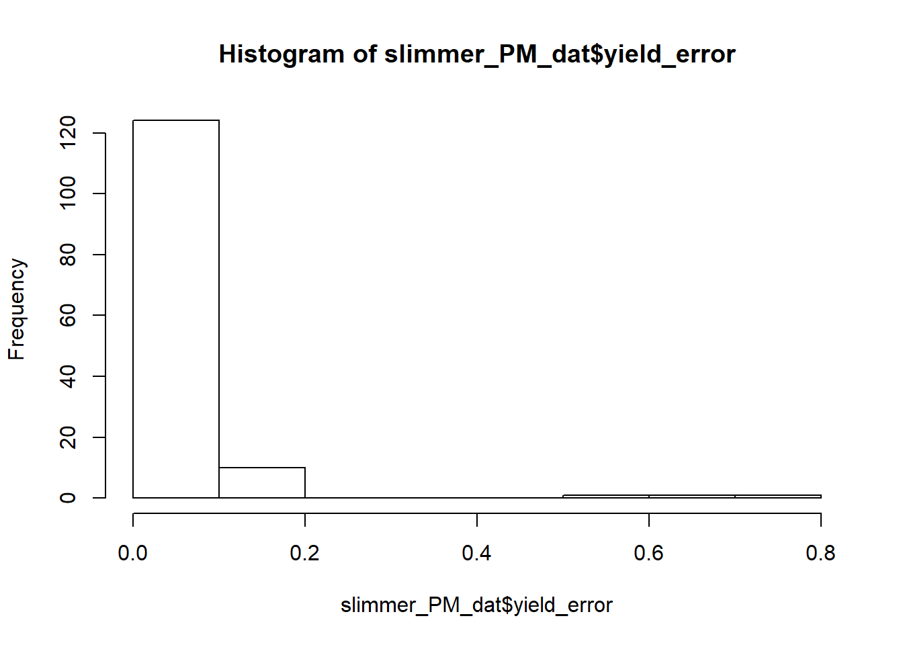
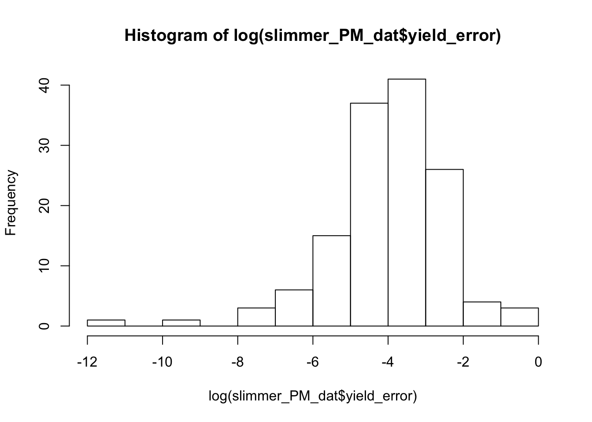
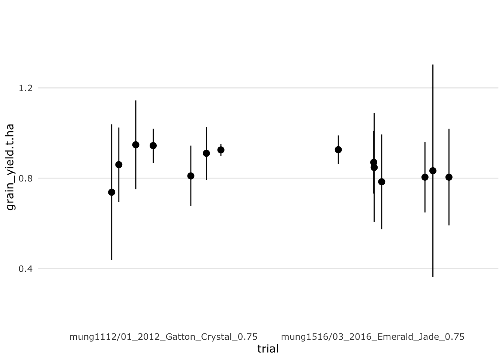
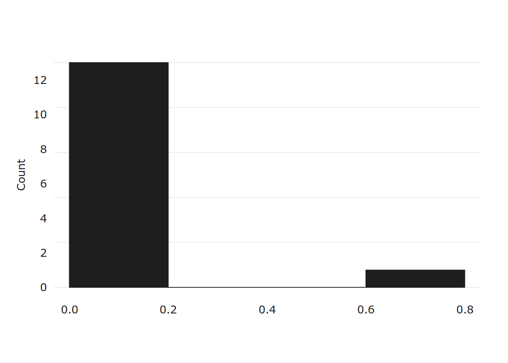
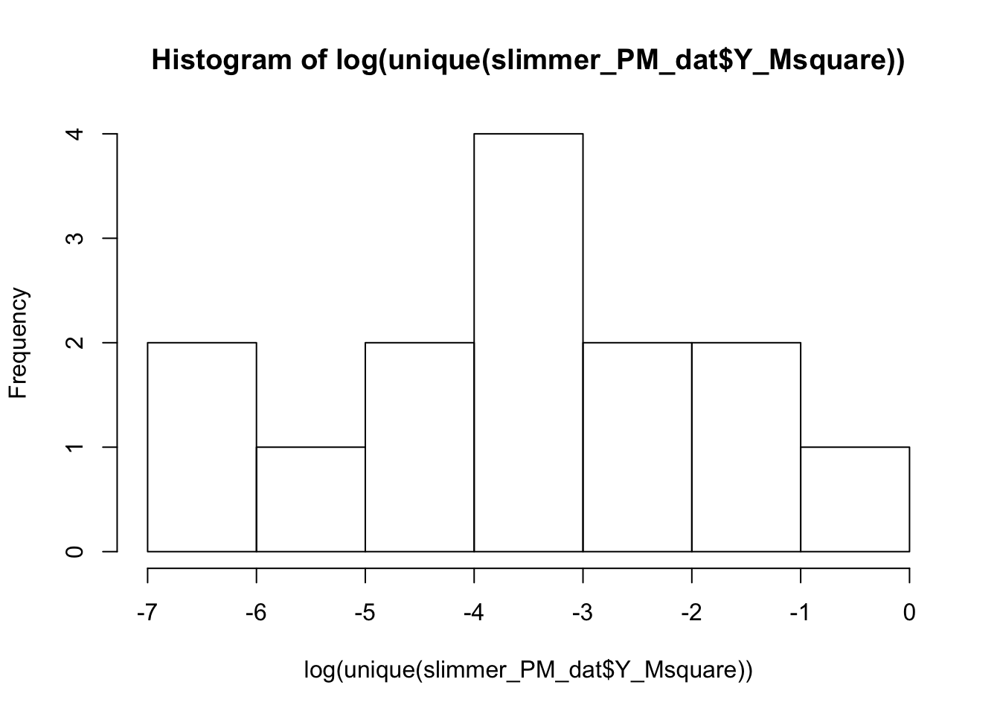

5 Meta-analysis
5.1 Grain yield meta-analysis
Let’s get started with the analysis by first finding the best model fit that answers our research question.
Which spray management scenario provides the greatest yield protection from powdery mildew.
- Grain yield is our response variable.
- Trial, which resolves combinations of categorical variables: year, location, row spacing and cultivar; is set as a random intercept.
- We will test spray management (our treatment) as a fixed effect and random slope to trial.
m8 <- lmer(grain_yield.t.ha * 1000 ~ factor(spray_management) +
(factor(spray_management) | trial_ref),
data = slimmer_PM_dat)## boundary (singular) fit: see ?isSingularm9 <- lmer(log(grain_yield.t.ha * 1000) ~ factor(spray_management) +
(factor(spray_management) | trial_ref),
data = slimmer_PM_dat)## boundary (singular) fit: see ?isSingularm10 <- lmer(log(grain_yield.t.ha * 1000) ~
(factor(spray_management) | trial_ref),
data = slimmer_PM_dat)## boundary (singular) fit: see ?isSingularm11 <- lmer(log(grain_yield.t.ha * 1000) ~ factor(spray_management) +
(1 | trial_ref),
data = slimmer_PM_dat)
anova(m8, m9) # m9 is significantly better model## refitting model(s) with ML (instead of REML)## Data: slimmer_PM_dat
## Models:
## m8: grain_yield.t.ha * 1000 ~ factor(spray_management) + (factor(spray_management) |
## m8: trial_ref)
## m9: log(grain_yield.t.ha * 1000) ~ factor(spray_management) + (factor(spray_management) |
## m9: trial_ref)
## Df AIC BIC logLik deviance Chisq Chi Df Pr(>Chisq)
## m8 21 2096.44 2159.80 -1027.22 2054.44
## m9 21 -29.36 34.01 35.68 -71.36 2125.8 0 < 2.2e-16 ***
## ---
## Signif. codes: 0 '***' 0.001 '**' 0.01 '*' 0.05 '.' 0.1 ' ' 1## refitting model(s) with ML (instead of REML)## Data: slimmer_PM_dat
## Models:
## m10: log(grain_yield.t.ha * 1000) ~ (factor(spray_management) | trial_ref)
## m9: log(grain_yield.t.ha * 1000) ~ factor(spray_management) + (factor(spray_management) |
## m9: trial_ref)
## Df AIC BIC logLik deviance Chisq Chi Df Pr(>Chisq)
## m10 17 -25.584 25.710 29.792 -59.584
## m9 21 -29.357 34.006 35.678 -71.357 11.773 4 0.01912 *
## ---
## Signif. codes: 0 '***' 0.001 '**' 0.01 '*' 0.05 '.' 0.1 ' ' 1## refitting model(s) with ML (instead of REML)## Data: slimmer_PM_dat
## Models:
## m11: log(grain_yield.t.ha * 1000) ~ factor(spray_management) + (1 |
## m11: trial_ref)
## m9: log(grain_yield.t.ha * 1000) ~ factor(spray_management) + (factor(spray_management) |
## m9: trial_ref)
## Df AIC BIC logLik deviance Chisq Chi Df Pr(>Chisq)
## m11 7 -48.130 -27.009 31.065 -62.130
## m9 21 -29.357 34.006 35.678 -71.357 9.2264 14 0.8163The best model from the four above is m9 with the lower AIC of -29.357.
## Linear mixed model fit by REML ['lmerMod']
## Formula:
## log(grain_yield.t.ha * 1000) ~ factor(spray_management) + (factor(spray_management) |
## trial_ref)
## Data: slimmer_PM_dat
##
## REML criterion at convergence: -50.8
##
## Scaled residuals:
## Min 1Q Median 3Q Max
## -2.58718 -0.51727 0.04068 0.58676 1.96151
##
## Random effects:
## Groups Name Variance Std.Dev. Corr
## trial_ref (Intercept) 2.442e-01 0.494173
## factor(spray_management)Early 9.264e-04 0.030436 -1.00
## factor(spray_management)Late_plus 4.281e-03 0.065426 1.00
## factor(spray_management)Recommended 6.291e-05 0.007931 1.00
## factor(spray_management)Recommended_plus 5.864e-03 0.076575 1.00
## Residual 2.323e-02 0.152403
##
##
##
## -1.00
## -1.00 1.00
## -1.00 1.00 1.00
##
## Number of obs: 151, groups: trial_ref, 17
##
## Fixed effects:
## Estimate Std. Error t value
## (Intercept) 6.80091 0.12274 55.411
## factor(spray_management)Early 0.04659 0.05136 0.907
## factor(spray_management)Late_plus 0.13618 0.05726 2.378
## factor(spray_management)Recommended 0.10907 0.03753 2.906
## factor(spray_management)Recommended_plus 0.14151 0.03954 3.579
##
## Correlation of Fixed Effects:
## (Intr) fc(_)E f(_)L_ fc(_)R
## fctr(spr_)E -0.224
## fctr(sp_)L_ 0.194 0.044
## fctr(spr_)R -0.086 0.297 0.185
## fctr(sp_)R_ 0.338 0.256 0.269 0.472
## convergence code: 0
## boundary (singular) fit: see ?isSingularThis linear mixed effect model shows indicates:
A single early spray before first sign of powdery mildew is not likely to increase yields.
A single or single spray with one or more follow sprays starting at the
recommendedfirst spray , within 3 days of powdery mildew first sign are likely to produce significantly higher grain yields compared to the no spray control.The
recommended_plusspray which has one or more follow-up sprays after first sign are likely to increase the mean grain yield.Late_plusspray treatments showed the highest mean grain yield, and was significantly higher than the no spray control. However showed no difference to either of therecommendedtreatments.
5.1.1 Imputing sample variances
We need to impute the variances which are missing for a few of the trials. These trials mung1112/01, mung1516/03 were analysed and reported that there was no significant difference between the treatments in each trial. So therefore we need the imputed variances not to show a significant difference.
There are 14 treatments without yield error in our data, and 137 where yield error was recorded.
Plotting a histogram of the variances show that the yield is not normally distributed. A log transformation, however, shows a normal distribution. We can use the mean and standard deviation of the log(V) to sample variances for the treatments where V is missing.


We will evaluate whether the imputed variances confer a significant difference to the recorded means. I created a distance matrix of two standard errors above the mean against two standard errors below the mean. If any errors don’t overlap, inferring significant difference, the imputed variances are discarded and re-sampled until all treatment variances show no significant differences.
# generate yield error values
for (i in 0:500) {
# Imputing missing log variances
log_Yerror <- rnorm(
n = sum(is.na(slimmer_PM_dat$yield_error)),
mean = mean(log(slimmer_PM_dat$yield_error), na.rm = TRUE),
sd = sd(log(slimmer_PM_dat$yield_error), na.rm = TRUE)
)
# First let's convert Variance to standard error for all the variables that have variance recorded
slimmer_PM_dat$yield_SE <-
sqrt(slimmer_PM_dat$yield_error) / sqrt(slimmer_PM_dat$n)
# Second; adding the imputed standard errors
slimmer_PM_dat[is.na(slimmer_PM_dat$yield_error), "yield_SE"] <-
sqrt(exp(log_Yerror)) / sqrt(slimmer_PM_dat[is.na(slimmer_PM_dat$yield_error), "n"])
# all errorbars should overlap so they are consistant with the meta-data describing no significant difference bettween treatments
# let's test to make sure
if (max(outer(
X = slimmer_PM_dat[is.na(slimmer_PM_dat$yield_error), "grain_yield.t.ha"] -
(2 * slimmer_PM_dat[is.na(slimmer_PM_dat$yield_error), "yield_SE"]),
Y = slimmer_PM_dat[is.na(slimmer_PM_dat$yield_error), "grain_yield.t.ha"] +
(2 * slimmer_PM_dat[is.na(slimmer_PM_dat$yield_error), "yield_SE"]),
FUN = "-"
)) > 0) {
message(
paste(
"\nWarning!!: Imputed yield errors show significant differences when they should not, imputation will automatically rerun - iteration",
"i =",
i
)
)
next()
} else{
message(
paste(
i,
"iterations: ",
"imputed variances now show no significant distances :)\n Now adding variances to data "
)
)
# Plot the imputed errors for each trial
Vplot <-
slimmer_PM_dat[is.na(slimmer_PM_dat$yield_error),] %>%
ggplot(aes(y = grain_yield.t.ha, trial)) +
#geom_point()+
geom_pointrange(
ymin = slimmer_PM_dat[is.na(slimmer_PM_dat$yield_error), "grain_yield.t.ha"] -
(1.95 * slimmer_PM_dat[is.na(slimmer_PM_dat$yield_error), "yield_SE"]),
ymax = slimmer_PM_dat[is.na(slimmer_PM_dat$yield_error), "grain_yield.t.ha"] +
(1.95 * slimmer_PM_dat[is.na(slimmer_PM_dat$yield_error), "yield_SE"]),
position = "jitter"
) +
ylim(0.2, 1.5)
slimmer_PM_dat[is.na(slimmer_PM_dat$yield_error), "yield_error"] <-
exp(log_Yerror)
print(Vplot)
break()
}
}##
## Warning!!: Imputed yield errors show significant differences when they should not, imputation will automatically rerun - iteration i = 0## 1 iterations: imputed variances now show no significant distances :)
## Now adding variances to data
The imputed variances calculated above don’t show the expected positive correlation between grain yield and variance. This is unexpected and reflects the inherent variability of the data. Therefore we will calculate the trial mean squares and use this to calculate the variance for each sample.
5.1.1.1 Imputing sample variances from Mean squares


Imputing using a log transformation of the data is required. Which trials need variance imputation?
TrialMSQ <- slimmer_PM_dat %>%
group_by(trial_ref)%>%
summarise(unique(Y_Msquare))
TrialMSQ[is.na(TrialMSQ$`unique(Y_Msquare)`), "trial_ref"]## # A tibble: 3 x 1
## trial_ref
## <fct>
## 1 mung1112/01
## 2 mung1112/02
## 3 mung1516/03for (i in TrialMSQ[is.na(TrialMSQ$`unique(Y_Msquare)`),]$trial_ref) {
slimmer_PM_dat[slimmer_PM_dat$trial_ref == i, "Y_Msquare"] <-
exp(rnorm(
n = 1,
mean = mean(log(TrialMSQ$`unique(Y_Msquare)`), na.rm = TRUE),
sd(log(TrialMSQ$`unique(Y_Msquare)`), na.rm = TRUE)
))
}Before analysis let’s have a look at the trimmed down modified data.
slimmer_PM_dat$spray_management <-
factor(slimmer_PM_dat$spray_management,
levels(slimmer_PM_dat$spray_management)[rev(c(1, 2, 4, 5, 3))])
slimmer_PM_dat %>%
ggplot(aes(y = grain_yield.t.ha, x = spray_management)) +
geom_boxplot() +
#geom_point(position = "jitter", alpha = 1/5)+
geom_jitter(width = 0.1, alpha = 1 / 5) +
labs(x = "Spray management variable",
y = "Grain yield (t/Ha)",
title = "Mean grain yield from each treatment \n categorised by spray management scenario") +
theme(plot.title = element_text(hjust = 0.5)) +
geom_hline(yintercept = 0, linetype = 2) +
coord_flip()
There seems like no difference between the treatments, with exception to Late_plus. Let’s do this plot again, but use the proportion of yield increase compared to the no spray control as the response variable.
It is also important to visualise how well the data is compared across the trial years and trials.
kableExtra::kable(table(slimmer_PM_dat$spray_management, slimmer_PM_dat$year),
align = rep('c', 8)) %>% #commented as was redering empty, needs a look in
kable_styling(
"striped",
fixed_thead = TRUE,
full_width = FALSE,
position = "center"
)| 2011 | 2012 | 2013 | 2015 | 2016 | 2017 | 2018 | 2019 | |
|---|---|---|---|---|---|---|---|---|
| Late_plus | 0 | 0 | 0 | 1 | 7 | 0 | 12 | 0 |
| Recommended_plus | 2 | 6 | 6 | 1 | 5 | 24 | 0 | 2 |
| Recommended | 4 | 6 | 3 | 1 | 4 | 12 | 0 | 2 |
| Early | 0 | 0 | 1 | 0 | 0 | 12 | 0 | 0 |
| control | 4 | 2 | 4 | 1 | 3 | 18 | 6 | 2 |
Treatments Late_plus and early don’t have very good comparison to other treatments.
slimmer_PM_dat$spray_management <-
factor(slimmer_PM_dat$spray_management, rev(
c(
"control",
"Early",
"Recommended",
"Recommended_plus",
"Late_plus"
)
))
slimmer_PM_dat %>%
ggplot(aes(y = prop_yield_gain, x = spray_management)) +
geom_boxplot() +
#geom_point(position = "jitter", alpha = 1/5)+
geom_jitter(width = 0.1, alpha = 1 / 5) +
labs(x = "Spray management variable",
y = "Grain yield (t/Ha)",
title = "Mean grain yield from each treatment \n categorised by spray management scenario") +
theme(plot.title = element_text(hjust = 0.5)) +
geom_hline(yintercept = 0, linetype = 2) +
coord_flip()## Warning: Removed 40 rows containing non-finite values (stat_boxplot).## Warning: Removed 40 rows containing missing values (geom_point).
5.2 Meta-analysis
5.2.1 metafor package
Let’s load the metafor package we are using to analyse the data, then rearrange the factors we want to examine by placing the control treatment first. This way all treatments will be compared to the no spray controls.
Next we are log transforming the grain yield and calculating the variance from the trial mean squares.
Finally we will assign factor classes to the main variables in the meta-analysis. Note that variable trial is a combination of:
- Trial identifier
- Trial year
- Trial location
- Host genotype
- Trial row spacing
## Loading 'metafor' package (version 2.1-0). For an overview
## and introduction to the package please type: help(metafor).slimmer_PM_dat$spray_management <-
factor(
slimmer_PM_dat$spray_management,
c(
"control",
"Early",
"Recommended",
"Recommended_plus",
"Late_plus"
)
)
slimmer_PM_dat$yi <- log(slimmer_PM_dat$grain_yield.t.ha)
slimmer_PM_dat$vi <-
slimmer_PM_dat$Y_Msquare / (slimmer_PM_dat$n * slimmer_PM_dat$grain_yield.t.ha ^
2)
slimmer_PM_dat$spray_management <-
factor(slimmer_PM_dat$spray_management)
slimmer_PM_dat$trial_ref <- factor(slimmer_PM_dat$trial_ref)
slimmer_PM_dat$trial <- factor(slimmer_PM_dat$trial)PM_mv_AI <- rma.mv(
yi,
vi,
mods = ~ spray_management,
method = "ML",
random = list( ~ spray_management | trial),
struct = "UN",
data = slimmer_PM_dat
)## Warning: Some combinations of the levels of the inner factor never occurred.
## Corresponding rho value(s) fixed to 0.##
## Multivariate Meta-Analysis Model (k = 151; method: ML)
##
## logLik Deviance AIC BIC AICc
## 43.1275 249.3442 -48.2551 9.0732 -42.4536
##
## Variance Components:
##
## outer factor: trial (nlvls = 25)
## inner factor: spray_management (nlvls = 5)
##
## estim sqrt k.lvl fixed level
## tau^2.1 0.2362 0.4860 40 no control
## tau^2.2 0.2295 0.4790 13 no Early
## tau^2.3 0.2621 0.5119 32 no Recommended
## tau^2.4 0.2776 0.5269 46 no Recommended_plus
## tau^2.5 0.2695 0.5191 20 no Late_plus
##
## rho.cntr rho.Erly rho.Rcmm rho.Rcm_ rho.Lt_p cntr
## control 1 0.9917 0.9932 0.9798 0.9900 -
## Early 0.9917 1 0.9999 0.9974 0.0000 7
## Recommended 0.9932 0.9999 1 0.9964 0.9997 21
## Recommended_plus 0.9798 0.9974 0.9964 1 0.9982 19
## Late_plus 0.9900 0.0000 0.9997 0.9982 1 7
## Erly Rcmm Rcm_ Lt_p
## control no no no no
## Early - no no yes
## Recommended 6 - no no
## Recommended_plus 6 19 - no
## Late_plus 0 4 4 -
##
## Test for Residual Heterogeneity:
## QE(df = 146) = 5243.7195, p-val < .0001
##
## Test of Moderators (coefficients 2:5):
## QM(df = 4) = 10.4202, p-val = 0.0339
##
## Model Results:
##
## estimate se zval pval ci.lb
## intrcpt -0.0311 0.0990 -0.3140 0.7535 -0.2251
## spray_managementEarly 0.0498 0.0551 0.9041 0.3659 -0.0582
## spray_managementRecommended 0.0619 0.0257 2.4068 0.0161 0.0115
## spray_managementRecommended_plus 0.0940 0.0337 2.7909 0.0053 0.0280
## spray_managementLate_plus 0.1090 0.0387 2.8192 0.0048 0.0332
## ci.ub
## intrcpt 0.1629
## spray_managementEarly 0.1579
## spray_managementRecommended 0.1122 *
## spray_managementRecommended_plus 0.1600 **
## spray_managementLate_plus 0.1848 **
##
## ---
## Signif. codes: 0 '***' 0.001 '**' 0.01 '*' 0.05 '.' 0.1 ' ' 1Results show that yields in single early spray treatments are not significantly different to the no spray control. Commencing spray management schedules at first sign of disease (Recommended), or between 7 - 19 days after first sign (late) produced significantly higher yields compared to the no spray control. On average a spray schedule with two or more applications stating late (7-19 days after first sign of powdery mildew) produced the highest yields.
When we compare these results to those of the linear mixed effect model there is little difference in the outcome. The most notable difference is the linear mixed-effect model is somewhat less certain about the Late_plus treatment, and the mean yield lower than the recommended_plus treatment.
## Warning in checkConv(attr(opt, "derivs"), opt$par, ctrl = control$checkConv, :
## Model failed to converge with max|grad| = 0.0368245 (tol = 0.002, component 1)## Linear mixed model fit by REML ['lmerMod']
## Formula: yi ~ spray_management + (spray_management | trial)
## Data: slimmer_PM_dat
##
## REML criterion at convergence: -52.4
##
## Scaled residuals:
## Min 1Q Median 3Q Max
## -2.78722 -0.42816 0.07383 0.50593 2.54197
##
## Random effects:
## Groups Name Variance Std.Dev. Corr
## trial (Intercept) 0.2465882 0.49658
## spray_managementEarly 0.0008349 0.02890 -1.00
## spray_managementRecommended 0.0003844 0.01961 0.34 -0.34
## spray_managementRecommended_plus 0.0062853 0.07928 0.89 -0.89 0.73
## spray_managementLate_plus 0.0047713 0.06907 0.96 -0.96 0.59
## Residual 0.0176660 0.13291
##
##
##
##
##
## 0.98
##
## Number of obs: 151, groups: trial, 25
##
## Fixed effects:
## Estimate Std. Error t value
## (Intercept) -0.07775 0.10168 -0.765
## spray_managementEarly 0.04476 0.04488 0.997
## spray_managementRecommended 0.10930 0.03302 3.310
## spray_managementRecommended_plus 0.14381 0.03472 4.142
## spray_managementLate_plus 0.13852 0.05005 2.768
##
## Correlation of Fixed Effects:
## (Intr) spry_E spry_R spr_R_
## spry_mngmnE -0.213
## spry_mngmnR -0.098 0.289
## spry_mngmR_ 0.273 0.257 0.493
## spry_mngmL_ 0.172 0.048 0.191 0.261
## convergence code: 0
## Model failed to converge with max|grad| = 0.0368245 (tol = 0.002, component 1)&spun;
&spun;
To make it easier to compare each of the treatments we can compute the meta-analysis contrasts.
anova(PM_mv_AI, L = rbind(
c(0, 1, -1, 0, 0),
# early vs Recomended
c(0, 1, 0, -1, 0),
# early vs recommended plus
c(0, 1, 0, 0, -1),
# early vs Late plus
c(0, 0, -1, 1, 0),
# Recommended vs recommended_plus
c(0, 0, -1, 0, 1),
# Recommended vs Late_Plus
c(0, 0, 0, -1, 1)
)) # recommended_plus vs Late_plus##
## Hypotheses:
## 1: spray_managementEarly - spray_managementRecommended = 0
## 2: spray_managementEarly - spray_managementRecommended_plus = 0
## 3: spray_managementEarly - spray_managementLate_plus = 0
## 4: -spray_managementRecommended + spray_managementRecommended_plus = 0
## 5: -spray_managementRecommended + spray_managementLate_plus = 0
## 6: -spray_managementRecommended_plus + spray_managementLate_plus = 0
##
## Results:
## estimate se zval pval
## 1: -0.0120 0.0552 -0.2178 0.8276
## 2: -0.0441 0.0566 -0.7792 0.4359
## 3: -0.0592 0.0627 -0.9434 0.3455
## 4: 0.0321 0.0220 1.4615 0.1439
## 5: 0.0472 0.0346 1.3613 0.1734
## 6: 0.0150 0.0357 0.4210 0.6738Results show with the exclusion of the no spray control, none of the treatments are significantly different, however, early applications treatments on average produced lower yields. Let’s view this on a plot.
results_AI <- data.frame(cbind(exp(PM_mv_AI$b),
exp((PM_mv_AI$ci.lb)),
exp(PM_mv_AI$ci.ub)))
# results_AI <- data.frame(cbind(PM_mv_AI$b,
# (PM_mv_AI$ci.lb),
# PM_mv_AI$ci.ub))
treat <-
c("control",
"Early",
"Recommended",
"Recommended_plus",
"Late_plus")
efficacy <- tbl_df(results_AI)
efficacy$treat <- treat
efficacy$se <- PM_mv_AI$se
colnames(efficacy) <-
c("Mean", "CIs_lower", "CI_upper", "Treatment", "SE")
efficacy## # A tibble: 5 x 5
## Mean CIs_lower CI_upper Treatment SE
## <dbl> <dbl> <dbl> <chr> <dbl>
## 1 0.969 0.798 1.18 control 0.0990
## 2 1.05 0.943 1.17 Early 0.0551
## 3 1.06 1.01 1.12 Recommended 0.0257
## 4 1.10 1.03 1.17 Recommended_plus 0.0337
## 5 1.12 1.03 1.20 Late_plus 0.0387efficacy$Treatment <-
factor(
efficacy$Treatment,
c(
"control",
"Early",
"Recommended",
"Recommended_plus",
"Late_plus"
)
)
efficacy %>%
ggplot(aes(Treatment, Mean)) +
geom_hline(
yintercept = c(0.8, 1, 1.2, 1.4),
color = "grey80",
linetype = 3
) +
geom_point(aes(size = 1 / SE), shape = 15) +
geom_linerange(aes(ymin = CIs_lower, ymax = CI_upper)) +
coord_flip()
What is interesting here is that the variance in the control has increased while the treatments have decreased. This is despite the control being the best represented across all experiments. However it could also be because it also has a low number of pooled reps per trial. Let’s look at how well each of the treatments compare to each other. We can use the netmeta package to give a graphical representation of this.
5.2.2 netmeta package
Let’s analyse the data again using a different statistical approach to see if our outcome with the metafor package was robust. The netmeta package uses a frequentness approach to the analysis, and focuses on the pairwise comparisons between treatments.
## Loading required package: meta## Loading 'meta' package (version 4.11-0).
## Type 'help(meta)' for a brief overview.##
## Attaching package: 'meta'## The following objects are masked from 'package:metafor':
##
## baujat, forest, funnel, funnel.default, labbe, radial, trimfill## Loading 'netmeta' package (version 1.2-0).
## Type 'help("netmeta-package")' for a brief overview.datPM3 <- slimmer_PM_dat %>%
group_by(trial, spray_management, n) %>%
summarize(yi_mean = mean(yi),
vi_mean = mean(vi)) %>%
ungroup()
PM_con <- pairwise(
treat = spray_management,
n = n,
mean = yi_mean,
sd = sqrt(vi_mean),
studlab = trial,
data = datPM3,
sm = "MD"
)
net_con <- netmeta(TE,
seTE,
treat1,
treat2,
studlab,
data = PM_con,
sm = "MD")## Warning: Note, treatments within a comparison have been re-sorted in increasing
## order.## Number of studies: k = 25
## Number of treatments: n = 5
## Number of pairwise comparisons: m = 93
## Number of designs: d = 6
##
## Fixed effects model
##
## Treatment estimate (sm = 'MD'):
## control Early Late_plus Recommended Recommended_plus
## control . -0.0803 -0.0601 -0.0056 -0.0211
## Early 0.0803 . 0.0202 0.0747 0.0592
## Late_plus 0.0601 -0.0202 . 0.0545 0.0390
## Recommended 0.0056 -0.0747 -0.0545 . -0.0155
## Recommended_plus 0.0211 -0.0592 -0.0390 0.0155 .
##
## Lower 95%-confidence limit:
## control Early Late_plus Recommended Recommended_plus
## control . -0.1515 -0.0961 -0.0251 -0.0407
## Early 0.0091 . -0.0588 0.0022 -0.0134
## Late_plus 0.0242 -0.0992 . 0.0185 0.0032
## Recommended -0.0139 -0.1473 -0.0906 . -0.0352
## Recommended_plus 0.0015 -0.1318 -0.0749 -0.0043 .
##
## Upper 95%-confidence limit:
## control Early Late_plus Recommended Recommended_plus
## control . -0.0091 -0.0242 0.0139 -0.0015
## Early 0.1515 . 0.0992 0.1473 0.1318
## Late_plus 0.0961 0.0588 . 0.0906 0.0749
## Recommended 0.0251 -0.0022 -0.0185 . 0.0043
## Recommended_plus 0.0407 0.0134 -0.0032 0.0352 .
##
## Random effects model
##
## Treatment estimate (sm = 'MD'):
## control Early Late_plus Recommended Recommended_plus
## control . -0.0737 -0.1084 -0.0689 -0.0883
## Early 0.0737 . -0.0347 0.0049 -0.0145
## Late_plus 0.1084 0.0347 . 0.0395 0.0201
## Recommended 0.0689 -0.0049 -0.0395 . -0.0194
## Recommended_plus 0.0883 0.0145 -0.0201 0.0194 .
##
## Lower 95%-confidence limit:
## control Early Late_plus Recommended Recommended_plus
## control . -0.1774 -0.1862 -0.1156 -0.1366
## Early -0.0299 . -0.1604 -0.1013 -0.1213
## Late_plus 0.0305 -0.0911 . -0.0398 -0.0595
## Recommended 0.0221 -0.1111 -0.1188 . -0.0675
## Recommended_plus 0.0400 -0.0923 -0.0997 -0.0287 .
##
## Upper 95%-confidence limit:
## control Early Late_plus Recommended Recommended_plus
## control . 0.0299 -0.0305 -0.0221 -0.0400
## Early 0.1774 . 0.0911 0.1111 0.0923
## Late_plus 0.1862 0.1604 . 0.1188 0.0997
## Recommended 0.1156 0.1013 0.0398 . 0.0287
## Recommended_plus 0.1366 0.1213 0.0595 0.0675 .
##
## Quantifying heterogeneity / inconsistency:
## tau^2 = 0.0065; tau = 0.0806; I^2 = 70.6% [61.1%; 77.9%]
##
## Tests of heterogeneity (within designs) and inconsistency (between designs):
## Q d.f. p-value
## Total 170.29 50 < 0.0001
## Within designs 148.37 43 < 0.0001
## Between designs 21.92 7 0.0026Now let’s visualise this as a forest plot
forest(
net_con,
reference.group = 4,
rightcols = c("effect", "ci", "Pscore"),
rightlabs = "P-Score",
small.values = "bad"
)
The netmeta analysis suggests the spray schedule commencing early are no different to any other treatment including the no spray control. It estimates the mean is very similar to the recommended treatments. The recommended plus and late_plus treatments show higher mean estimates, however not significantly different from the early estimate.
netgraph(
net_con,
plastic = FALSE,
col = "orange",
thickness = "number.of.studies",
points = FALSE,
col.points = "black",
cex.points = 1,
number.of.studies = TRUE,
cex.number.of.studies = 1,
col.number.of.studies = "black",
bg.number.of.studies = "orange",
multiarm = FALSE,
col.multiarm = "lightblue",
pos.number.of.studies = 0.5
)
## League table (fixed effect model):
##
## control -0.1195 [-0.1977; -0.0412]
## -0.0803 [-0.1515; -0.0091] Early
## -0.0601 [-0.0961; -0.0242] 0.0202 [-0.0588; 0.0992]
## -0.0056 [-0.0251; 0.0139] 0.0747 [ 0.0022; 0.1473]
## -0.0211 [-0.0407; -0.0015] 0.0592 [-0.0134; 0.1318]
##
## -0.0920 [-0.1348; -0.0491] -0.0052 [-0.0248; 0.0144]
## . -0.0587 [-0.1842; 0.0669]
## Late_plus 0.0567 [ 0.0134; 0.1000]
## 0.0545 [ 0.0185; 0.0906] Recommended
## 0.0390 [ 0.0032; 0.0749] -0.0155 [-0.0352; 0.0043]
##
## -0.0188 [-0.0386; 0.0010]
## -0.0116 [-0.1421; 0.1190]
## 0.0036 [-0.0385; 0.0456]
## -0.0162 [-0.0360; 0.0037]
## Recommended_plus
##
## League table (random effects model):
##
## control -0.0999 [-0.2184; 0.0186]
## -0.0737 [-0.1774; 0.0299] Early
## -0.1084 [-0.1862; -0.0305] -0.0347 [-0.1604; 0.0911]
## -0.0689 [-0.1156; -0.0221] 0.0049 [-0.1013; 0.1111]
## -0.0883 [-0.1366; -0.0400] -0.0145 [-0.1213; 0.0923]
##
## -0.1242 [-0.2132; -0.0352] -0.0661 [-0.1135; -0.0187]
## . -0.0636 [-0.2090; 0.0817]
## Late_plus 0.0315 [-0.0653; 0.1283]
## 0.0395 [-0.0398; 0.1188] Recommended
## 0.0201 [-0.0595; 0.0997] -0.0194 [-0.0675; 0.0287]
##
## -0.0837 [-0.1333; -0.0341]
## -0.0244 [-0.1732; 0.1245]
## -0.0062 [-0.1026; 0.0902]
## -0.0194 [-0.0681; 0.0292]
## Recommended_plus## Q statistics to assess homogeneity / consistency
##
## Q df p-value
## Total 170.29 50 < 0.0001
## Within designs 148.37 43 < 0.0001
## Between designs 21.92 7 0.0026
##
## Design-specific decomposition of within-designs Q statistic
##
## Design Q df p-value
## control:Late_plus 0.82 2 0.6643
## control:Recommended 0.15 1 0.7012
## control:Early:Recommended:Recommended_plus 10.99 15 0.7536
## control:Late_plus:Recommended:Recommended_plus 18.68 9 0.0281
## control:Recommended:Recommended_plus 117.75 16 < 0.0001
##
## Between-designs Q statistic after detaching of single designs
##
## Detached design Q df p-value
## control:Early 17.91 6 0.0065
## control:Late_plus 20.11 6 0.0026
## control:Recommended 20.08 6 0.0027
## control:Early:Recommended:Recommended_plus 14.63 4 0.0055
## control:Late_plus:Recommended:Recommended_plus 10.55 4 0.0322
## control:Recommended:Recommended_plus 6.04 5 0.3026
##
## Q statistic to assess consistency under the assumption of
## a full design-by-treatment interaction random effects model
##
## Q df p-value tau.within tau2.within
## Between designs 3.12 7 0.8735 0.0823 0.0068## Back-calculation method to split direct and indirect evidence
##
## Fixed effect model:
##
## comparison k prop nma direct indir. Diff z p-value
## control:Early 7 0.83 -0.0803 -0.1195 0.1086 -0.2281 -2.37 0.0179
## control:Late_plus 7 0.70 -0.0601 -0.0920 0.0156 -0.1076 -2.68 0.0074
## control:Recommended 21 0.99 -0.0056 -0.0052 -0.0371 0.0319 0.36 0.7195
## control:Recommended_plus 19 0.98 -0.0211 -0.0188 -0.1326 0.1138 1.60 0.1090
## Early:Late_plus 0 0 0.0202 . 0.0202 . . .
## Early:Recommended 6 0.33 0.0747 -0.0587 0.1416 -0.2002 -2.55 0.0107
## Early:Recommended_plus 6 0.31 0.0592 -0.0116 0.0910 -0.1025 -1.28 0.2009
## Late_plus:Recommended 4 0.69 0.0545 0.0567 0.0497 0.0070 0.17 0.8617
## Late_plus:Recommended_plus 4 0.73 0.0390 0.0036 0.1338 -0.1302 -3.17 0.0015
## Recommended:Recommended_plus 19 0.99 -0.0155 -0.0162 0.0548 -0.0709 -0.68 0.4976
##
## Random effects model:
##
## comparison k prop nma direct indir. Diff z p-value
## control:Early 7 0.76 -0.0737 -0.0999 0.0114 -0.1113 -0.89 0.3719
## control:Late_plus 7 0.77 -0.1084 -0.1242 -0.0568 -0.0675 -0.72 0.4718
## control:Recommended 21 0.97 -0.0689 -0.0661 -0.1695 0.1034 0.70 0.4849
## control:Recommended_plus 19 0.95 -0.0883 -0.0837 -0.1735 0.0897 0.80 0.4254
## Early:Late_plus 0 0 -0.0347 . -0.0347 . . .
## Early:Recommended 6 0.53 0.0049 -0.0636 0.0833 -0.1469 -1.35 0.1762
## Early:Recommended_plus 6 0.51 -0.0145 -0.0244 -0.0041 -0.0202 -0.19 0.8528
## Late_plus:Recommended 4 0.67 0.0395 0.0315 0.0559 -0.0244 -0.28 0.7768
## Late_plus:Recommended_plus 4 0.68 0.0201 -0.0062 0.0765 -0.0827 -0.95 0.3431
## Recommended:Recommended_plus 19 0.98 -0.0194 -0.0194 -0.0179 -0.0015 -0.01 0.9927
##
## Legend:
## comparison - Treatment comparison
## k - Number of studies providing direct evidence
## prop - Direct evidence proportion
## nma - Estimated treatment effect (MD) in network meta-analysis
## direct - Estimated treatment effect (MD) derived from direct evidence
## indir. - Estimated treatment effect (MD) derived from indirect evidence
## Diff - Difference between direct and indirect treatment estimates
## z - z-value of test for disagreement (direct versus indirect)
## p-value - p-value of test for disagreement (direct versus indirect)nm1 <- netmeasures(net_con)
plot(
nm1$meanpath,
nm1$minpar,
pch = "",
xlab = "Mean path length",
ylab = "Minimal parallelism"
)
text(nm1$meanpath, nm1$minpar, names(nm1$meanpath), cex = 0.8)